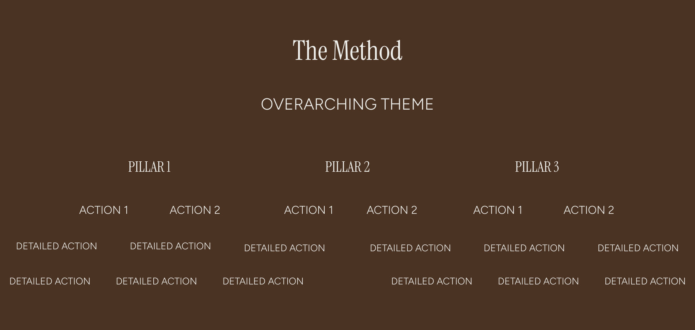

If you are anything like me, setting goals for each year is a huge motivator. Although these happen around the new year, I think of these things as goals rather than resolutions because they are not short term. Rather they are long term things that contribute to the person I am becoming.
Here is an example, several years ago I decided I was going to be a reader. I did this because I wanted to stop watching TV before bed, and I wanted to quite my mind. That goal is how I went from never reading to reading 20+ books a year for the last three years in a row. Now reading is just a small portion of my nightly routine. This year I have a goal that takes my nightly routine to the next level. Reading was the building block that helped me create this foundation for my nightly habits.
This year I noticed that I was so eager to jump into setting my new goals that I almost forgot to reflect on everything I accomplished in the past year! We spend so much of our time rushing and looking for the next thing that we forget to slow down and appreciate everything that we already have. I encourage you to sit down and write a list of everything big and small that you accomplished in 2025. Maybe you changed jobs, maybe your family grew, maybe you left behind something that no longer served you. Take a moment to just notice and appreciate all of the incredible things you accomplished.
My 4 step process for creating goals
- Review Past Vision Boards – I create a dedicated Pinterest board for each year. Since it’s an app I use daily, my vision stays “top of mind.” Before diving into the next years goals I always go back and look at all the years past just to see how my vision has changed over the years.
- Reflect on Accomplishments – Take a moment to slow down and think about everything you accomplished during the year. This list should encompass everything big and small! Including the goals you hit that weren’t even on your radar in January. This is where we find the gratitude that fuels the next year.
- Grow Your Goals – I like to think of my goals like a tree. There is the top of the tree which represents the overall theme for the year, the second layer of my tree represents the pillars that roll up into the overall theme and each layer of the tree is a more detailed.
- Visualize – Create a vision board to match your new goals! Store your board somewhere easy to access (ie. Pinterest) so that you come back to it often!
Once you have finished outlining your goals for the year it’s important to save them somewhere easy to find so that you can look back on them often and see track your progress.
